There are several ways to put the timer in front of people. This lesson lists them all, so you can pick the right one before the detail in the next three lessons.
Every way to show the timer
| Screen | Best use | What it needs | Lesson |
|---|---|---|---|
| Simulator | Training, and checking what the stage will show, on your own device. | Nothing. It does not send to hardware. | This one |
| LED sign | A physical red LED countdown and short cues at the front of the church. | The supported W2 profile, the sign's Wi-Fi and its connection password. | Connect the LED sign |
| Phone or tablet stage screen | A large stage countdown, rich Quick messages, screen groups and Seen. | The app on that device, pairing, and a network that lets devices reach each other. | Pair a phone or tablet |
| Web screen | A laptop on a projector, a smart TV or people's own phones following in a browser. | Nothing installed; the same Wi-Fi as the host, and a guest or team code. | Pair a phone or tablet |
| Second screen (PC only) | A projector or monitor plugged into the PC running the service. | Windows set to Extend. No network and no pairing. | Second screen and full screen |
| Full screen | When your own screen is the one people watch: a laptop on a lectern, or a tablet on a stand. | A running service or Quick timer. | Second screen and full screen |
Stage screens, web screens, a second screen and full screen all draw the same stage picture: a large countdown in your theme's colours, with cues, warnings, the clock and a blank screen as you send them. See What a stage screen looks like. This guide calls them "screens" where the LED sign behaves differently.
Words can go on these screens too. With Slides, a song, a Bible reading or an announcement can take the place of the countdown on the second screen, web screens and, if you tick them, stage screens. The LED sign never shows slides. See Show words with Slides.
The time on these screens holds still. Every digit has its own place, as wide as the widest digit, so the time keeps one size and nothing shifts as the seconds change. That is true during the service, in the countdown to a scheduled start, and on the clock shown before it. The time changes size only when it gains or loses a character, such as the + of overtime, or when the screen changes size. On a PC, the Stage simulator, the second screen, full screen and the large time in the mini timer use the app's own font, not Windows' font, so they look the same as on a phone. A web screen uses the browser's own font.
What a stage screen looks like
Stage screens follow your theme. The countdown and the clock use the colours of the theme you chose in Settings › Appearance, light themes too. Before, a stage screen was always white on black. Cues, messages and Blank keep their own backgrounds. The LED sign is not changed.

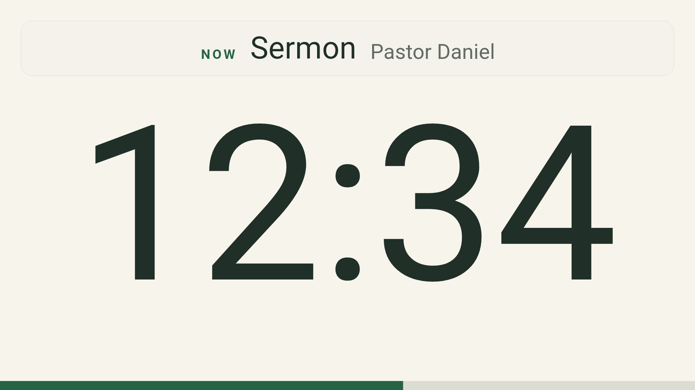
Four layouts. The layout is what the screen shows while it counts down.
| Layout | What the screen shows |
|---|---|
| Timer only | The time, as large as the screen allows. |
| Timer and segment name | A NOW band across the top: the name large, the speaker quieter. |
| Timer and up next | An UP NEXT band along the bottom: the name, then who has it and how long. |
| Up next only | Only the next item: UP NEXT, its name large, then who has it and how long. No time at all. On the last segment, in a Quick timer or with no program, it shows the end screen set for the program, or the clock where there is none. |

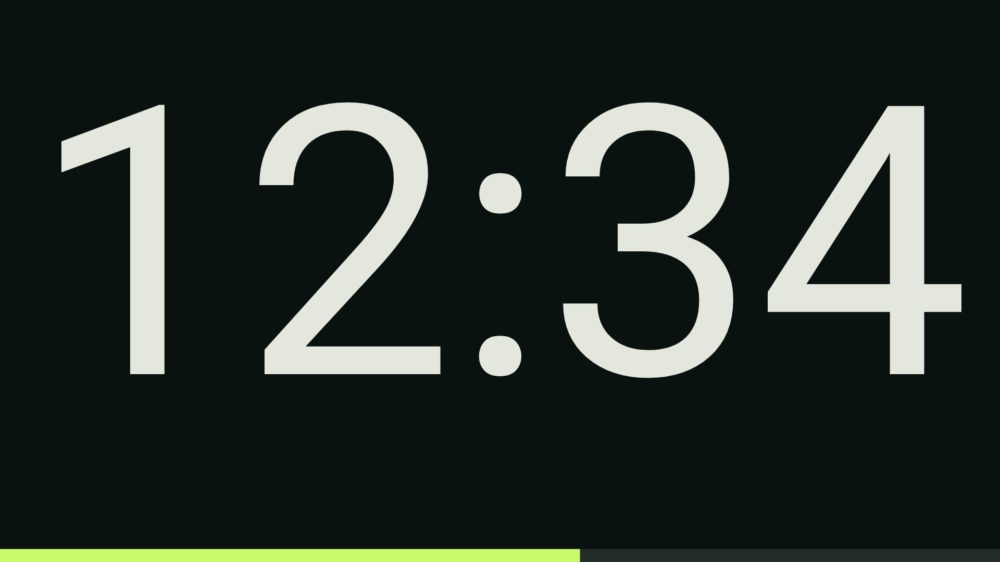

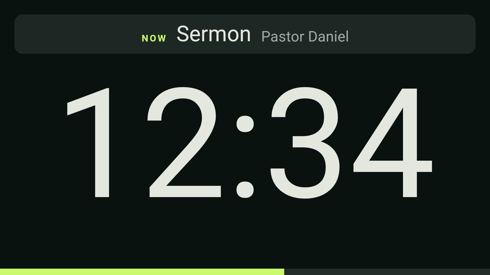

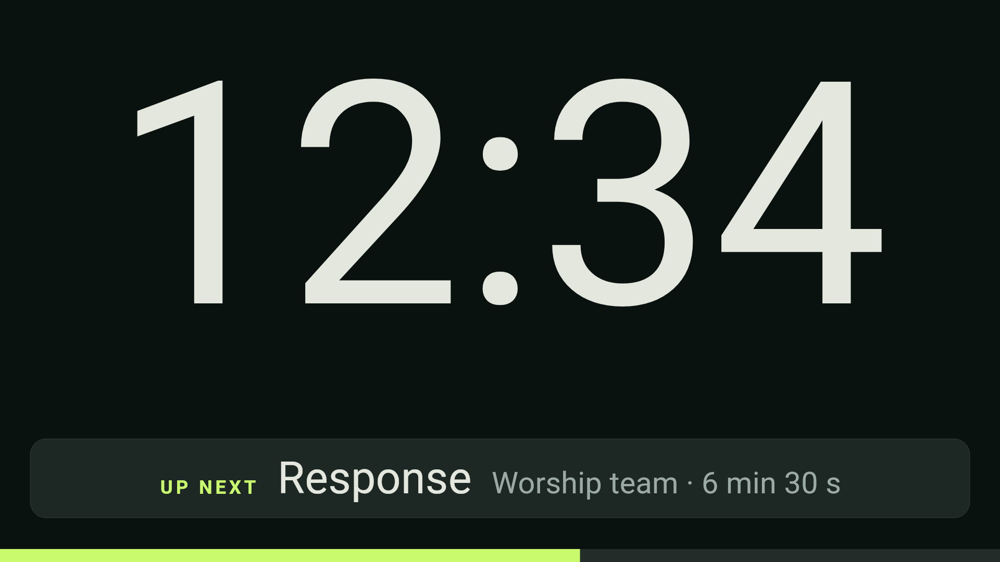

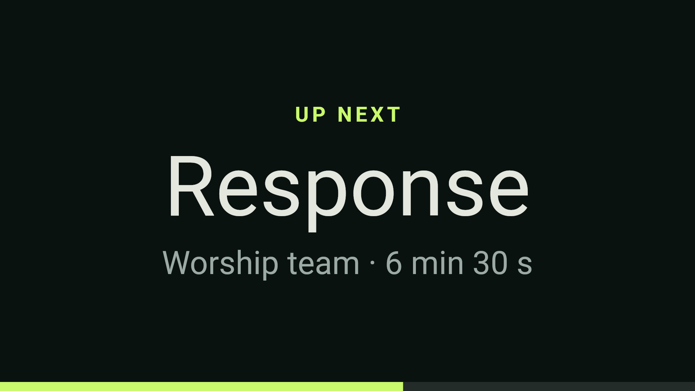
- A long name ends in "…" on a wide screen and wraps on a phone held upright.
- A line along the bottom edge shows how much of the segment has gone.
- In the warning period (the warning times you already set), the digits and the line turn amber.
- A paused countdown is dimmed and says PAUSED.
- The digits keep a fixed width, so they do not shift as they count.

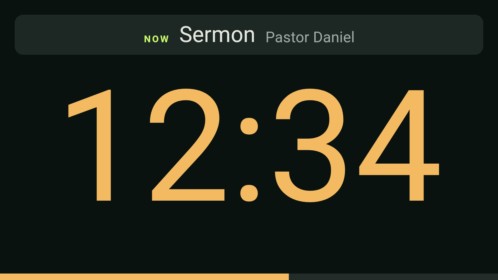
Choosing a layout. Everywhere the layout is chosen, it is four picture tiles. Each tile is a small drawing of the layout, with its name and a tick on the one chosen. Up next only carries a small NEW tag. On a phone, and with large text, the tiles wrap to two to a row.

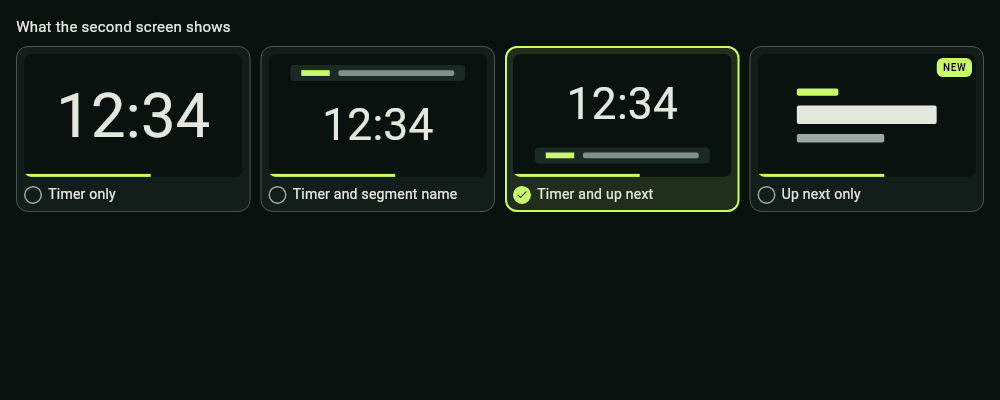

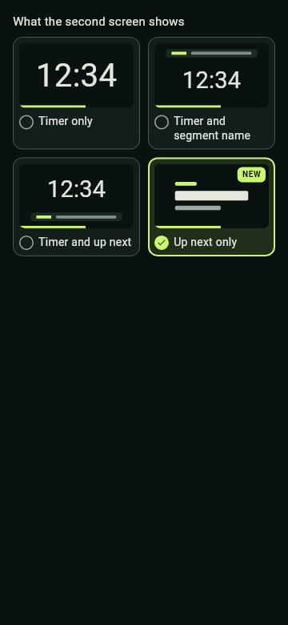
| Screen | Where to choose |
|---|---|
| Each paired phone or tablet | Screen options › Screen layout. See Pair a phone or tablet. |
| Web screens | Web screen options › Stage displays show. |
| Second screen on a PC (and full screen on that PC) | Settings › Screens & devices › Second screen › What the second screen shows. |
| Full screen on a phone or tablet | Settings › Screens & devices › Full screen on this phone. |
| Stage simulator | Simulate in Choose display. |
An older paired phone or tablet does not know Up next only: it shows the segment name under the timer. The LED sign is unchanged.
Overtime on a stage screen
When a segment runs past 00:00, the whole stage screen turns solid red. Large dark digits count up, such as +0:42, and the screen says OVER TIME. It is steady and never flashes.

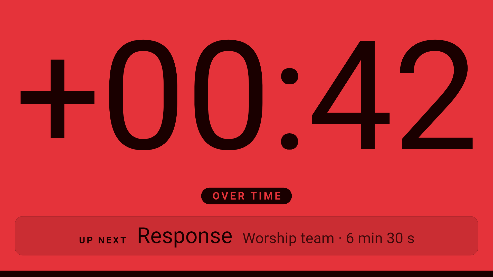
Overtime alert in Settings › Display settings (next to At zero) sets how strongly.
| Choice | What the stage screen does |
|---|---|
| Gentle | Keeps the theme's background, with red digits and a thick red frame. |
| Strong (the default) | The whole screen turns red, with large dark digits counting up. |
| Strongest | The same red screen, pulsing slowly about every two seconds. It stays steady when Reduced motion is on. |

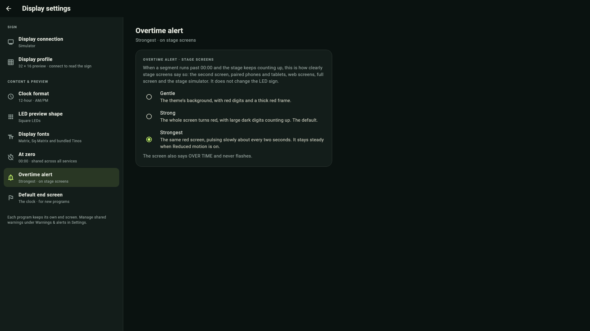
- Up next only shows no time, so overtime does not change it.
- The setting is kept on this device, not in backups. Older saved data reads as Strong.
- It changes stage screens only: the second screen, paired phones and tablets, web screens, full screen and the stage simulator. The LED sign is not changed.
The flip clock
Wherever a stage screen fills with the time of day, it shows a flip clock: the hours and minutes on cards that fold over when a digit changes, with the weekday in the theme's colour and the date under them, such as Monday and 23 November 2026.

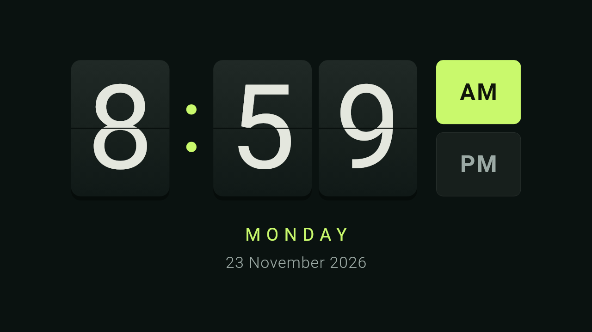
It shows:
- after Show clock;
- when a service or program ends on the clock (no end screen), and when a Quick timer ends on the clock;
- before a scheduled service, until the countdown to the start begins;
- under a banner cue, which still shows over the clock.
It follows Clock format in Settings › Display settings:
| Clock format | The flip clock |
|---|---|
| 12-hour | No leading zero (8:59), with AM and PM tiles. The current one is lit. |
| 24-hour | Two digits (08:59), and no tiles. |

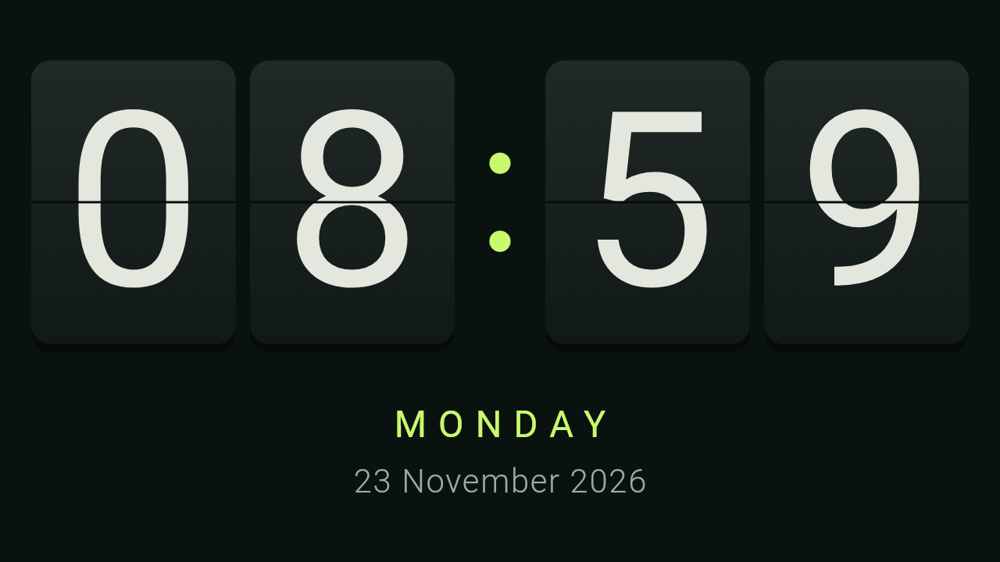
- Held upright, a phone keeps the hours and minutes in one row, with the AM and PM tiles in a row under them. On a wider screen the tiles stand beside the time.

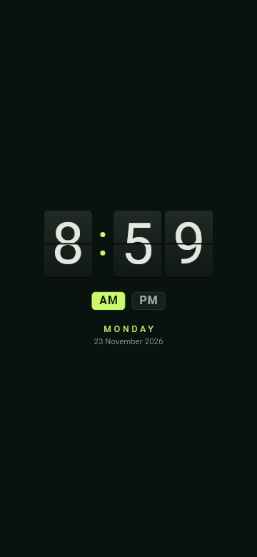
- It follows the theme, light themes included.
- It shows on the second screen, paired stage screens, web screens, full screen and the stage simulator. It does not show on the LED sign or its simulator, which keep their own clock.
- With Reduced motion on, the digits change without folding.
- The colon on the flip clock stays lit.
Choose display
Select the display chip at the top of Live, or Change display, to open Choose display. It asks "Where should your stage output appear?" and offers one destination at a time. Each choice shows what is connected, for example "1 paired · 2 web connected".

| Destination | The chip then reads |
|---|---|
| LED sign | LED sign |
| Phone, tablet or web screens | Stage screens, or Waiting for a screen until one joins |
| Simulator | LED simulator or Stage simulator |
LED sign and Phone, tablet or web screens are alternative stage-output destinations. Sharing to viewers, operators and web screens is separate, so sharing does not itself replace the LED sign. A second screen and full screen are separate too: they work whichever destination is chosen.
Changing destination keeps the service timer running and stops LED reconnect attempts when another destination is chosen. When leaving a connected LED sign, choose whether to Blank previous sign or Leave output. A sign left displaying a countdown can continue on its own.
What the Simulator simulates
With no LED sign and no stage screens in use, the Display preview on Live shows a pretend display. You choose which kind:
| Choice | The preview shows | The chip reads |
|---|---|---|
| LED sign | The exact 32 × 16 LED layout. A new install starts here. | LED simulator |
| Stage screen | The large countdown, cues, clock and blank screen as a phone, tablet, web or second screen would show them. | Stage simulator |
Change it in either place:
- In Choose display, under Simulator: Simulate: LED sign | Stage screen.
- On Live, select the chip beside Display preview and choose Simulate an LED sign or Simulate a stage screen.

Nothing is asked when you switch. The choice is kept on that device and is not part of backups. Locked controls cannot change it.
The Stage simulator can also show what a stage screen set to any of the four layouts would show, Up next only included. Choose it under Simulate in Choose display. This too is kept on that device.
Scrolling cues move smoothly on the Stage simulator. The LED simulator moves a whole column at a time, as the sign does.
Check the real screen
Always check the badge after changing output. A simulator preview, an authenticated LED connection and an acknowledged stage screen are different states. Use Test screen (or Test 5 s in the Quick message composer) and have someone confirm the intended physical screen before the service.
If a phone, tablet, PC or browser joins as a stage screen while your display is set to the Simulator or the LED sign, it has nothing to show. Live then shows a note with a Show on stage screens button, which sends the timer to those screens in one step. The waiting screen itself says what to do on the host.